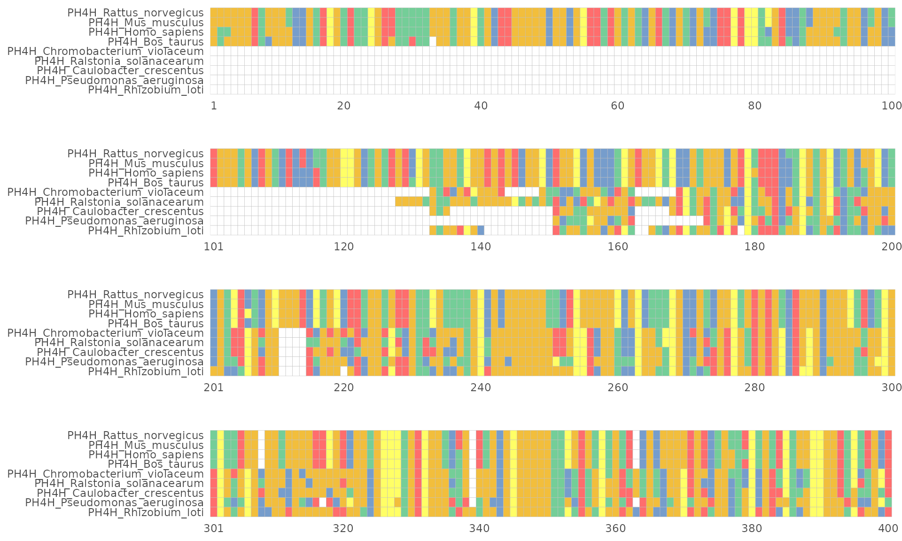

使用ggmsa可视化和探索多序列比对和相关数据
Lang Chau, Guangchuang Yu, Shuangbin Xu
Oct 2021
Source:vignettes/workflow_ggmsa_Chinese.Rmd
workflow_ggmsa_Chinese.Rmd背景介绍
摘要
在多序列比对(Multiple Sequence Alignment,MSA)的可视化中，普遍采用堆叠可视化的形 式，其以行表示每条序列，以列表示相同位置的不同残基字符。我们开发的R包ggmsa在 可视化层面扩展了这种堆叠形式的可视化方法，使得MSA图形可以与各类数据进行整合。 例如：允许将序列二级结构信息、基因座位点信息或表型数据等序列相关的数据集与MSA结 合，以此来探索序列-结构-功能三者之间的关系。并且，我们还开发和整合多种特别的 比对序列可视化方法，包核苷酸差异图、核苷酸相似性图 (鉴定序列重组信号)、 序列集束(Sequence Bundles)和序列标识(Sequence Logos)， 这允许用户从不同角度探索序列的特征。


使用ggmsa探索MSA和相关数据
ggmsa的技术路线

ggmsa通过两种方案来解决上面的问题。 首先，单一的可视化方法无法得到令人满意的可视化方法，因此ggmsa开发并整合多种 通用的序列可视化方法。这为用户提供了更多可视化手段来从不同角度探索序列数据。
其次，ggmsa 拓展了普通的堆叠图形，使得外部数据可以对齐到MSA的行或者列上，实现 在可视化层面同时探索序列和相关数据。
不同的可视化方法
堆叠图形
plot
protein_sequences <- system.file("extdata", "sample.fasta", package = "ggmsa")
readAAMultipleAlignment(protein_sequences) output
#> AAMultipleAlignment with 9 rows and 456 columns
#> aln names
#> [1] MAAVVLENGVLSRKLSDFGQETSYIE...QLKILADSINSEVGILCNALQKIKS PH4H_Rattus_norve...
#> [2] MAAVVLENGVLSRKLSDFGQETSYIE...QLKILADSINSEVGILCHALQKIKS PH4H_Mus_musculus
#> [3] MSTAVLENPGLGRKLSDFGQETSYIE...QLKILADSINSEIGILCSALQKIK- PH4H_Homo_sapiens
#> [4] MSALVLESRALGRKLSDFGQETSYIE...QLKILADSISSEVEILCSALQKLK- PH4H_Bos_taurus
#> [5] --------------------------...LNAGDRQGWADTEDV---------- PH4H_Chromobacter...
#> [6] --------------------------...LNAGTREGWADTADI---------- PH4H_Ralstonia_so...
#> [7] --------------------------...LTRGT-QAYATAGGRLAGAAAG--- PH4H_Caulobacter_...
#> [8] --------------------------...------------------------- PH4H_Pseudomonas_...
#> [9] --------------------------...------------------------- PH4H_Rhizobium_loti
ggmsa(protein_sequences,
start = 221,
end = 280,
char_width = 0.5,
seq_name = TRUE,
border = NA)plot
这是最简单的序列可视化方法 应用的颜色，字体，输入数据类型
available_colors()
#> 1.color schemes for nucleotide sequences currently available:
#> Chemistry_NT Shapely_NT Taylor_NT Zappo_NT
#> 2.color schemes for AA sequences currently available:
#> ClustalChemistry_AA Shapely_AA Zappo_AA Taylor_AA LETTER CN6 Hydrophobicity
available_fonts()
#> font families currently available:
#> helvetical mono TimesNewRoman DroidSansMono
available_msa()
#> 1.files currently available:
#> .fasta
#> 2.XStringSet objects from 'Biostrings' package:
#> DNAStringSet RNAStringSet AAStringSet BStringSet DNAMultipleAlignment RNAMultipleAlignment AAMultipleAlignment
#> 3.bin objects:
#> DNAbin AAbin堆叠图形中的注释模块
protein_sequences <- system.file("extdata", "sample.fasta", package = "ggmsa")
ggmsa(protein_sequences, start = 221, end = 280, char_width = 0.5, seq_name = TRUE) + geom_seqlogo() + geom_msaBar()plot

| Annotation modules | Type | Description |
|---|---|---|
| geom_seqlogo() | geometric layer | automatically generated sequence logos for a MSA |
| geom_GC() | annotation module | shows GC content with bubble chart |
| geom_seed() | annotation module | highlights seed region on miRNA sequences |
| geom_msaBar() | annotation module | shows sequences conservation by a bar chart |
| geom_helix() | annotation module | depicts RNA secondary structure as arc diagrams(need extra data) |
不同的布局
# 4 fields
ggmsa(protein_sequences, start = 0, end = 400, font = NULL, color = "Chemistry_AA") +
facet_msa(field = 100)plot

The long sequence was broken down and displayed in several lines.

Sequence logo
plot

ggmsa(protein_sequences, 221, 280, seq_name = TRUE, char_width = 0.5, font = NULL) +
geom_seqlogo(color = "Chemistry_AA") plot

seqlogo(protein_sequences, 221, 280)plot

Sequence recombination
plot
fas <- list.files(system.file("extdata", "GVariation", package="ggmsa"),
pattern="fas", full.names=TRUE)
xx <- lapply(fas, seqdiff)
plts <- lapply(xx, plot, width = 100)
fas[4] <- system.file("extdata/GVariation/sample_alignment.fa",
package="ggmsa")# + theme(legend.position = "bottom")
plts[[4]] <- simplot(fas[4], 'CF_YL21')
plot_list(gglist=plts, ncol=1, tag_levels = list(c("A",' ',"B", ' ',"C", ' ', "D")))plot

拓展Stacked MSA

对齐到行
#load MSA and genes locus
tp53_sequences <- system.file("extdata", "tp53.fa", package = "ggmsa")
tp53_genes <- system.file("extdata", "TP53_genes.xlsx", package = "ggmsa")
#generating phylogenetic tree according to MSA
dat <- read.aa(tp53_sequences, format = "fasta") %>% phyDat(type = "AA", levels = NULL)
tree <- dist.ml(dat, model = "JTT") %>% bionj()
dd <- ggimage::phylopic_uid(tree$tip.label)
#visualizing phylogenetic tree by ggtree
p_tp53 <- ggtree(tree, branch.length = 'none') %<+% dd +
geom_tiplab(aes(image=uid), geom = "phylopic", offset =1.9) +
geom_tiplab(aes(label=label)) +
geom_treescale(x = 0,y = -1)
#deal with MSA data
data_53 <- readAAMultipleAlignment(tp53_sequences) %>% tidy_msa()
#gene maps
TP53_arrow <- read_xlsx(tp53_genes)
TP53_arrow$direction <- 1
TP53_arrow[TP53_arrow$strand == "reverse","direction"] <- -1
#color
mapping = aes(xmin = start, xmax = end, fill = gene, forward = direction)
my_pal <- colorRampPalette(rev(brewer.pal(n = 10, name = "Set3")))
#tree + gene maps + msa
p6a <- p_tp53 + xlim_tree(4) +
geom_facet(geom = geom_msa, data = data_53,
panel = 'Multiple Sequence Alignment of the TP53 Protein', font = NULL,
border = NA) +
new_scale_fill() +
scale_fill_manual(values = my_pal(10)) +
geom_facet(geom = geom_motif,
mapping = mapping, data = TP53_arrow,
panel = 'Genome_Locus', on = 'TP53',
arrowhead_height = unit(3, "mm"),
arrowhead_width = unit(1, "mm")) +
theme(strip.background=element_blank(),
strip.text = element_text(size = 13))
p6A <- facet_widths(p6a, c(Tree = 0.35, Genome_Locus = 0.3))
p6Aplot

对齐到列
RNA7S <- "data/3JAJ-2D-dotbracket.txt"
RNAP54 <- "data/4UJE-2D-dotbracket.txt"
RF03120_msa<- system.file("extdata", "Rfam", "RF03120.fasta", package = "ggmsa")
RF03120_ss <- system.file("extdata", "Rfam", "RF03120_SS.txt", package = "ggmsa")
known <- readSSfile(RNA7S, type = "Vienna" )
transat <- readSSfile(RNAP54 , type = "Vienna")
RF_arc <- readSSfile(RF03120_ss, type = "Vienna" )
p7A <- ggmsa(RF03120_msa,
font = NULL,
color = "Chemistry_NT",
seq_name = F,
show.legend = F,
border = NA) +
geom_helix(helix_data = RF_arc) +
theme(axis.text.y = element_blank())
p7B <- ggmsa("data/5SRNA.fa",
font = NULL,
color = "Chemistry_NT",
seq_name = T,
show.legend = T,
border = NA) +
geom_helix(helix_data = list(known = known,
predicted = transat),
overlap = F)
p7 <- plot_list(gglist = list(p7A, p7B),
ncol = 1,
heights = c(0.15),
tag_levels = 'A')
p7plot